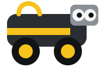

CarkarooCar + kangaroo. A kangaroo carries what matters in its pouch; Roo, our AI delivery car, carries boxes to the stations before they run out. The theme is Night Race: the monochrome racing look of our poster and portfolio (asphalt, chrome, fog, checkered flags, slanted banners) with one signal color, the yellow of Roo's motors.
"Carka" in ink, "roo" in yellow on a slanted asphalt plate, set in Barlow Condensed Bold Italic. Leave one wheel of space around it. Never recolor or stretch Roo.
Black, white and chrome do almost everything. Yellow is the only accent: the route, kerbs, highlights. Never yellow text on fog. Status colors appear small and only when they mean something. Materials always carry their letter.
Barlow Condensed Bold Italic for headings, banners and big numbers: it leans forward like the poster's titles. IBM Plex Sans for reading. IBM Plex Mono for times and IDs. Uppercase only on banners.
A 4 px grid, the poster's big round panels with a thick outline, slanted banners, and a yellow kerb under panels instead of soft shadows.
From components.css. The website uses exactly these.
The factory is a white track mat with black tape. The route is a yellow highlighter under the tape. The 3D world uses the same
colors as satin plastic and chrome, in a fog mood or a night mood: see carkaroo.js and section 8 of the brand book.
1 unit = 1 metre. A lit white track board on asphalt, fog or night. Graphite Roo with a yellow stripe and hubs, chrome sensors, checkered flags at the dock. Roo drives at the real timings (15 cm/s, 2 s per turn) and hops once after each delivery.
const K = window.CARKAROO; scene.background = new THREE.Color(K.scene.moods.night.background); const body = new THREE.MeshStandardMaterial(K.three.body); const route = new THREE.MeshBasicMaterial(K.three.route);
16:9 on fog, the checkered finish strip on top, Roo in the corner. Italic titles that say the point. One yellow highlight per slide. Dark slides for the demo and the end.